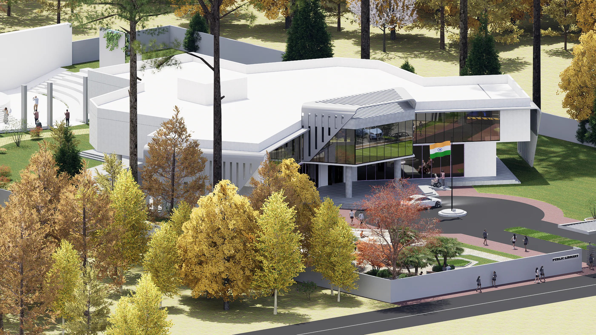
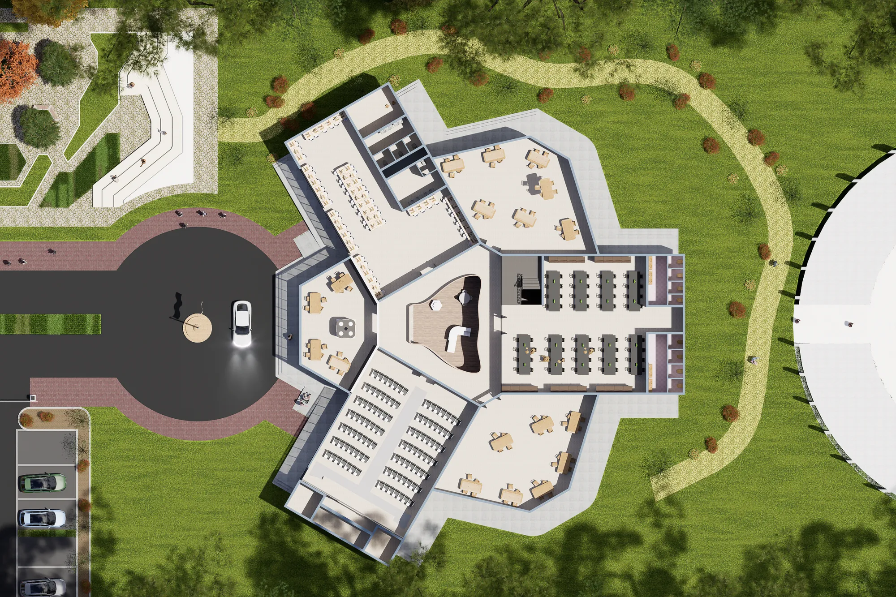

Architecture portfolio · 2024—27
Architecture
shaped by context.
Defined by purpose.
Explore selected work ↗Mohammed HuzefaScroll to explore ↓
A student portfolio
Spaces shaped
around people.
Academic proposals, technical studies and the thinking behind them. A growing record of work in architecture and public space.
Selected work
All projects ↗
Academic proposal · 2026—27
Proposed Library
View project ↗Approach